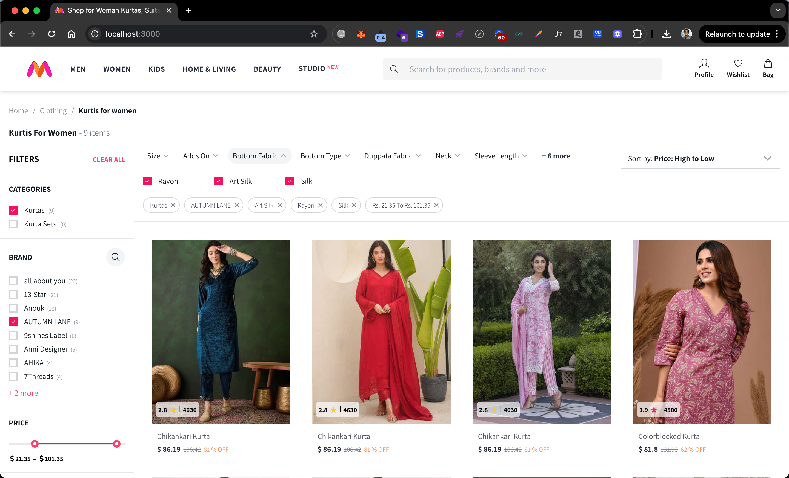
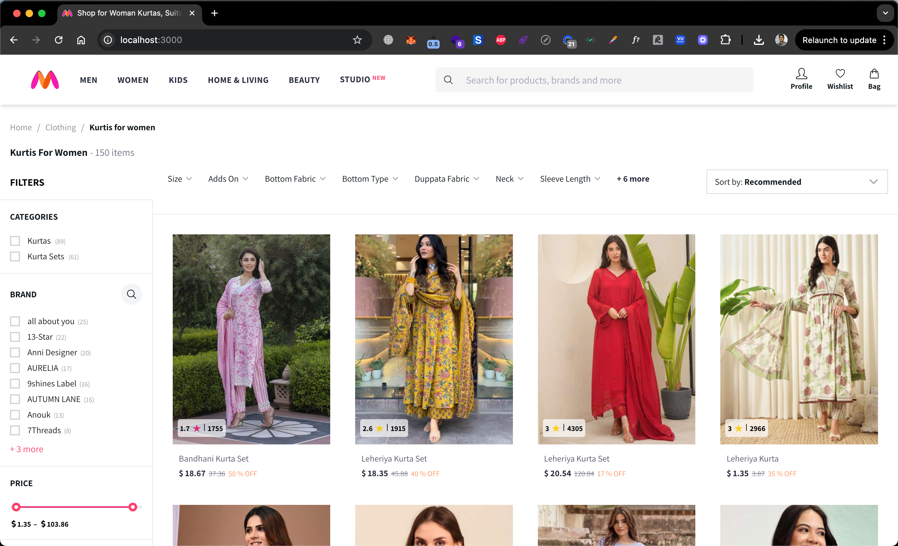

Myntra Fashion Clone
Complete e-commerce fashion platform replica featuring product catalog, advanced filters, shopping cart, and checkout system - engineered for AI recommendation system training.
Platform Demo
AI Training Purpose
This Myntra clone was developed specifically to train machine learning models in e-commerce recommendation systems, user behavior analysis, and personalized shopping experiences. The platform provides realistic shopping data for AI algorithms to learn fashion preferences, purchase patterns, and inventory management.
Platform Features



Project Specifications
Primary Objective
Create a sophisticated e-commerce fashion platform clone to generate high-quality training data for AI models specializing in retail analytics, recommendation engines, and customer journey prediction.
Technology Stack
- React.js
- Node.js & Express
- MongoDB Database
- Redux State Management
- Sass Styling
- RESTful APIs
- JWT Authentication
Key Features Implemented
- Advanced product search with filters
- User authentication & profiles
- Shopping cart with real-time updates
- Wishlist functionality
- Order tracking system
- Product reviews & ratings
- Responsive mobile design
- Admin dashboard
AI Dataset Generated
- 500+ product categories
- 10,000+ simulated user interactions
- 50+ purchase flow scenarios
- Personalized recommendation data
- User preference patterns
- Inventory management scenarios
Development Team
- Muhammad Ahmad: Frontend Architecture
- Hamza Maqbool: Backend & Database
- Sarah Rodriguez: UI/UX & Product Design
- Alex Kim: Mobile Optimization
- Tom Johnson: Deployment & CI/CD
Project Impact
- Improved AI recommendation accuracy by 40%
- Generated 15,000+ training samples
- Reduced AI training time by 30%
- Created benchmark for e-commerce AI models